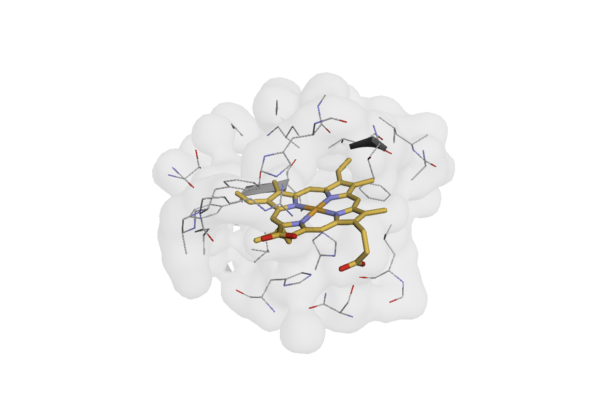

Note
Go to the end to download the full example code.
Creating Custom Transforms: Ligand Pocket Conditioning#
This example demonstrates how to create custom Transform classes in AtomWorks using ligand pocket identification as an example. We’ll build two transforms that follow AtomWorks conventions.
Prerequisites: Familiarity with Loading and Visualizing Protein Structures and Annotating and Saving Protein Structures for basic structure handling and annotation techniques.

Transform Architecture and Design Patterns#
AtomWorks Transform classes follow a standard pattern with one required method - forward() - and several optional methods/attributes to promote interoperability and pipeline compatibility.
Required Method#
forward(): The only mandatory method. Takes a state dictionary and returns an updated dictionary.
Optional Methods & Attributes#
check_input(): Validates input data (annotations, types, etc.), raising informative errors if conditions are violatedrequires_previous_transforms: List ofTransformsthat MUST run within the pipeline prior to thisTransformincompatible_previous_transforms: List ofTransformsthat CANNOT have been run within the pipeline prior to thisTransform
Conventions#
A. Store information in AtomArray annotations, not in the state dictionary.#
This ensures robustness when atoms are added/removed downstream.
For the example below:
✅ Add
is_pocket_atomannotation to AtomArray❌ Store
pocket_atom_indicesin dictionary (which creates significant dependencies with operations that delete or re-order atoms)
B. Within forward(), call a stand-alone function with the same name as the transform class.#
We thus maintain an object-oriented and a functional API, making our core logic re-usable and testable outside of the Transform framework.
For the example below:
AnnotateLigandPockets.forward()callsannotate_ligand_pockets()functionFeaturizePocketAtoms.forward()callsfeaturize_pocket_atoms()function
Additionally, this function should preserve the input (e.g., not modify the underlying AtomArray) and take as arguments any necessary parameters.
C. Each Transform should follow the single-responsibility-principle; in particular separate Annotation from Featurization Transforms#
To ensure our Transform code is maximally forward-compatible and re-usable across disparate pipelines, we adhere to the single responsibility principle - that is, each transform should do exactly one action.
For the example below:
AnnotateLigandPocketsonly identifies and annotates pocket atomsFeaturizePocketAtomsonly converts existing annotations to numeric features
Now, if a different model wants to perform an action on small molecule pockets, but with a different featurization scheme, the researchers would simply need to write a different Featurize Transform leveraging the existing annotations.
import biotite.structure as struc
import numpy as np
from biotite.structure import AtomArray
# AtomWorks imports
from atomworks.io import parse
from atomworks.io.utils.testing import get_pdb_path_or_buffer
from atomworks.io.utils.visualize import view
from atomworks.ml.transforms._checks import check_atom_array_annotation
from atomworks.ml.transforms.base import Transform
# sphinx_gallery_thumbnail_path = '_static/examples/pocket_conditioning_transform_01.png'
# Load example structure (myoglobin with heme ligand; our recurring test example)
example_pdb_id = "101m"
pdb_path = get_pdb_path_or_buffer(example_pdb_id)
parse_output = parse(pdb_path)
atom_array = parse_output["assemblies"]["1"][0]
print(f"Loaded structure: {len(atom_array)} atoms")
print(f"Non-polymer residues: {np.unique(atom_array.res_name[~atom_array.is_polymer])}")
print(f"Heme atoms: {np.sum(atom_array.res_name == 'HEM')}")
Building AnnotateLigandPockets#
Let’s create a Transform that identifies atoms near ligands (non-polymer molecules) of sufficient size.
Observe how we follow the conventions outlined above:
Stores results as
AtomArrayannotation rather than returning indices or masks separately.Does not modify input
AtomArrayin place.Function name mimics
Transformclass name for clarity.Accepts all parameters as arguments.
def annotate_ligand_pockets(
atom_array: AtomArray,
pocket_distance: float = 6.0,
n_min_ligand_atoms: int = 5,
annotation_name: str = "is_ligand_pocket",
) -> AtomArray:
"""
Identify atoms near ligands of sufficient size.
Args:
atom_array: Input structure
pocket_distance: Distance threshold for pocket identification (Angstroms)
n_min_ligand_atoms: Minimum atoms required for a ligand (across the full pn_unit) to define pockets
annotation_name: Name for the boolean annotation
Returns:
AtomArray with ligand pocket annotation added
"""
atom_array = atom_array.copy() # By convention, do not modify input in place
# Find all ligand pn_unit_iids within our structure and their atom counts
# We make use of the pn_unit_iid annotation, which is most applicable for ligands, elegantly
# handling cases of multi-residue or multi-chain small molecules (e.g., many sugars)
# See the Glossary for more information regarding our naming conventions within AtomWorks
ligand_pn_unit_iids, ligand_counts = np.unique(atom_array.pn_unit_iid[~atom_array.is_polymer], return_counts=True)
# Filter to only ligands with sufficient size
valid_ligand_mask = ligand_counts >= n_min_ligand_atoms
valid_ligand_pn_unit_iids = ligand_pn_unit_iids[valid_ligand_mask]
# Initialize pocket annotation
pocket_annotation = np.zeros(len(atom_array), dtype=bool)
if len(valid_ligand_pn_unit_iids) == 0:
# No valid ligands found - store empty annotation and return
atom_array.set_annotation(annotation_name, pocket_annotation)
return atom_array
# Build CellList for efficient distance computations on CPU
# (Atoms with invalid coordinates would break our distance search)
valid_coords_mask = ~np.isnan(atom_array.coord).any(axis=1)
assert np.any(valid_coords_mask), "No valid coordinates found"
valid_coords = atom_array.coord[valid_coords_mask]
cell_list = struc.CellList(valid_coords, cell_size=pocket_distance)
# Get coordinates of all valid ligands
all_valid_ligands_mask = np.isin(atom_array.pn_unit_iid, valid_ligand_pn_unit_iids)
all_ligand_coords = atom_array.coord[all_valid_ligands_mask]
# Find atoms within distance of any ligand coordinates (all at once)
distance_mask = cell_list.get_atoms(all_ligand_coords, pocket_distance, as_mask=True)
near_ligand_valid = np.any(distance_mask, axis=0)
# Map back to full atom array
near_ligand_full = np.zeros(len(atom_array), dtype=bool)
near_ligand_full[valid_coords_mask] = near_ligand_valid
# Only polymer atoms can be pocket atoms
pocket_annotation = atom_array.is_polymer & near_ligand_full
# Store result as annotation (AtomWorks convention)
atom_array.set_annotation(annotation_name, pocket_annotation)
return atom_array
class AnnotateLigandPockets(Transform):
"""Identify atoms near ligands of sufficient size."""
def __init__(
self, pocket_distance: float = 6.0, n_min_ligand_atoms: int = 5, annotation_name: str = "is_ligand_pocket"
):
self.pocket_distance = pocket_distance
self.n_min_ligand_atoms = n_min_ligand_atoms
self.annotation_name = annotation_name
def check_input(self, data: dict) -> None:
"""Validate input has required annotations. (Optional method)"""
check_atom_array_annotation(data, ["is_polymer", "pn_unit_iid"])
def forward(self, data: dict) -> dict:
"""Apply ligand pocket annotation. (Required method)"""
# Follow forward/function pattern: call standalone function
data["atom_array"] = annotate_ligand_pockets(
data["atom_array"],
pocket_distance=self.pocket_distance,
n_min_ligand_atoms=self.n_min_ligand_atoms,
annotation_name=self.annotation_name,
)
return data
# Test the functional version
result_array = annotate_ligand_pockets(
atom_array, pocket_distance=6.0, n_min_ligand_atoms=5, annotation_name="is_ligand_pocket"
)
# Here, we are using AtomWork's "query" syntax for convenience, which operates similar to Pandas DataFrame queries
# Please see the API documentation for more details
view(result_array.query("is_ligand_pocket | (res_name == 'HEM')"))
Building FeaturizePocketAtoms#
Now let’s create a model-specific transform that converts derived pocket annotations into numeric features.
Here, we also demonstrate the use of: - ``requires_previous_transforms``: Ensures dependency ordering in pipelines - ``check_atom_array_annotation()``: Validates required annotations using AtomWorks utilities
We can imagine varying this featurization Transform across models while keeping the original annotation Transform constant.
def featurize_pocket_atoms(atom_array: AtomArray, pocket_annotation_name: str = "is_ligand_pocket") -> dict:
"""
Create one-hot encoded features from pocket annotations.
Args:
atom_array: Structure with pocket annotations
pocket_annotation_name: Name of the pocket boolean annotation
Returns:
Dictionary with feature array and metadata
"""
pocket_mask = getattr(atom_array, pocket_annotation_name)
# Create one-hot encoded feature: 0.0 for non-pocket, 1.0 for pocket atoms
features = pocket_mask.astype(np.float32).reshape(-1, 1)
return {"features": features, "feature_names": ["is_pocket_atom"], "n_atoms": len(atom_array)}
class FeaturizePocketAtoms(Transform):
"""Convert pocket annotations into one-hot encoded numeric features."""
requires_previous_transforms = ["AnnotateLigandPockets"] # noqa: RUF012
def __init__(self, pocket_annotation_name: str = "is_ligand_pocket", feature_key: str = "pocket_features"):
self.pocket_annotation_name = pocket_annotation_name
self.feature_key = feature_key
def check_input(self, data: dict) -> None:
"""Validate input has pocket annotations using AtomWorks utility."""
check_atom_array_annotation(data, [self.pocket_annotation_name])
def forward(self, data: dict) -> dict:
"""Generate features following the forward/function pattern."""
data[self.feature_key] = featurize_pocket_atoms(
data["atom_array"], pocket_annotation_name=self.pocket_annotation_name
)
return data
# Test featurization using a proper pipeline
# First apply the annotation transform, then the featurization
annotator = AnnotateLigandPockets(pocket_distance=6.0, n_min_ligand_atoms=5)
featurizer = FeaturizePocketAtoms()
# Apply both transforms in sequence
data = {"atom_array": atom_array}
annotated_data = annotator(data)
feature_result = featurizer(annotated_data)
features = feature_result["pocket_features"]
print(f"Generated features: {features['features'].shape}")
print(f"Feature names: {features['feature_names']}")
print(f"Feature type: {type(features['features'])}")
print(f"Pocket atoms (sum): {features['features'].sum():.0f}")
print(f"Non-pocket atoms: {len(features['features']) - features['features'].sum():.0f}")
Pipeline Composition#
Transform composition allows chaining transforms together with automatic dependency checking:
from atomworks.ml.transforms.base import Compose
# Create a complete ligand pocket processing pipeline
ligand_pocket_pipeline = Compose(
[
AnnotateLigandPockets(pocket_distance=6.0, n_min_ligand_atoms=3),
FeaturizePocketAtoms(feature_key="pocket_features"),
]
)
# Apply pipeline to fresh data
fresh_data = {"atom_array": atom_array}
pipeline_result = ligand_pocket_pipeline(fresh_data)
print("Pipeline Results:")
print(f" Transforms applied: {[t.__class__.__name__ for t in ligand_pocket_pipeline.transforms]}")
print(f" Pocket atoms found: {np.sum(pipeline_result['atom_array'].is_ligand_pocket)}")
print(f" Features shape: {pipeline_result['pocket_features']['features'].shape}")
# Demonstrate the + operator
alternative_pipeline = AnnotateLigandPockets(n_min_ligand_atoms=8) + FeaturizePocketAtoms()
alt_result = alternative_pipeline({"atom_array": atom_array})
print(f" Alternative (min 8 atoms): {np.sum(alt_result['atom_array'].is_ligand_pocket)} pocket atoms")